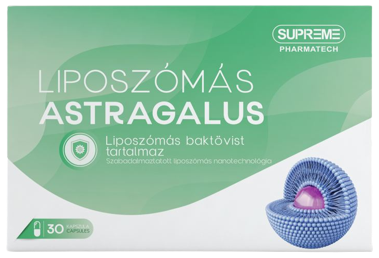
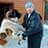

BETILTOTT FELFEDEZÉS: 7 hét alatt a mesterséges vörösvértestek segíthetnek megszabadulni a magas vérnyomástól, erősíthetik az ereket és fokozhatják az immunitást!
A műsor forgatása során egy kínos eset történt, amely felháborította a kardiológia "nagykutyáit". Az egyik meghívott szakértő hirtelen elkezdett a forgatókönyvtől eltérően nyilatkozni.
Kijelentésével megdöbbentette a stúdióban ülő közönséget. De főleg a tisztviselőknek akadt el a szava.
Vérnyomás! Ez az emberek fő gyilkosa. Nemcsak Európában, hanem az egész világon. És maguk mind úgy tesznek, mintha ez normális lenne. Nem veszik észre a fejlett eszközöket, amelyek segítenek megoldani ezt a problémát.
A szív- és érrendszeri megbetegedések a világ első számú betegségei, ami a halálos áldozatok számát illeti. A szívroham és a stroke 94%-át a magas vérnyomás okozza. A szívroham és a stroke 89%-ában a magas vérnyomás halálos kimenetelű. A konkrét értékeket tekintve a magas vérnyomás a "természetes" halálozások mintegy 77-78%-áért felelős. Abszolút számokban ez körülbelül 1,5 millió halálesetet jelent az elmúlt évben, 2021-ben.
"Az emberek az elhasználódott szív és erek miatt halnak meg! Ezt egyszer s mindenkorra jegyezzék meg!" — állította Tóth Tamás, az egyik meghívott szakértő, de a többi résztvevő szó szerint neki ugrott, és befogta a száját.
A statisztikák megdöbbentőek! Ugyanebben az időszakban közel 500 000 magyar halt meg érrendszeri és szívproblémákban.
A stúdióban zűrzavar támadt. A szakértők és meghívott tisztviselők vitatkozni kezdtek, egymást félbeszakítva. A műsort leállították, és gyorsan reklámblokkot kapcsoltak. Dr. Tóth pedig elhagyta a stúdiót.
A nézők azonban sokáig emlékezni fognak az esetre.
Úgy döntöttünk, hogy saját nyomozásba kezdünk, és felkutattuk ezt a szakértőt.
Kérdéseire válaszol: a neves és nemzetközileg is elismert orvos, a Magyar Orvostudományi Akadémia professzora és kedvenc műsorvezetőnk, dr. Tóth
Dr. Tóth 36 éve dolgozik az orvosi pályán. Műsorával magyarok millióinak segített pénzt spórolni a gyógyszereken.
Kerg Imália: "Dr. Tóth, úgy tűnik, minden kollégája tud a tévés botrányról. Hogyhogy nem félt ilyesmit tenni?”
Dr. Tóth: Tisztában voltam a kockázatokkal, de nem tudtam tovább hallgatni. Nem lehet folyton a semmiről beszélni, és nem kínálni konkrét megoldást. Orvos vagyok, letettem a hippokratészi esküt, és betartom azt. És nagyon örülök, hogy ismét kapcsolatba léptek velem, mert meg tudom ismételni a szavaimat. Az emberek kapzsisága és mohósága manapság már nem mérhető.
Kerg Imália: “Pontosan miről beszél?”
Dr. Tóth: Hogy vannak olyan betegségek, amelyekkel hazánkban meg sem próbálnak foglalkozni. Szív- és érrendszeri betegségekkel foglalkozom, szívrohamon és agyvérzésen átesett embereket rehabilitálok. És az én szakterületemen a csalás mindenhol jelen van.
Biztos vagyok benne, hogy ugyanez történik a mozgásszervi, gyomor-bélrendszeri stb. betegségekkel is. Gyakran a szakemberek segítenek elfedni a betegség tüneteit, de nem szüntetik meg az okát. Ezért térnek vissza a betegségek.
És ez a gyógyszeripari vállalatok és képviselőik hibája, akik megvesztegetik a magyar szakembereket.
Az ereket és a vérnyomást nem kezelik Magyarországon!
Kerg Imália: "Tehát azt mondja, hogy a magas vérnyomásra alkalmazott minden modern készítmény hatástalan?"
Dr. Tóth: A gyakran felírt vérnyomáscsökkentők egy fontos funkciót töltenek be: az átlagemberek zsebéből a kapzsi szakemberek és gyógyszergyártó cégek zsebébe szippantják a pénzt.
A kábítószerekhez hasonlítható. Gondoljanak bele! Az ember bevesz egy tablettát, és az állapota javul. Amikor a készítmény hatása megszűnik, a vérnyomása ismét emelkedik. Így működik minden drog. Ahhoz, hogy jól érezze magát, új "adagot" kell szereznie. Ez lényegében legális méreg. Nem gyógyít semmit, sőt, egyes helyzetekben még ront is a helyzeten, így vissza kell jönni a fájdalomcsillapítóért!
A legfontosabb dolog, hogy megértsük ezt: az ilyen “kémiai” termékek szükségesek és fontosak vészhelyzetekben. Ilyenkor életeket mentenek. Az első világháborúban például heroint használtak a csatatéren, hogy a sebesültek túléljék a fájdalmas sokkot.
De ha állandóan tablettákat szed, azok tönkretehetik a szervezetet. Mint a heroin. Nem olyan gyorsan, de az elv ugyanaz. És hogy megszabaduljanak a mellékhatásoktól, még több tablettát adnak el önnek. És még. És még. Minél több, annál jobb a magángyógyszertárak és a gyógyszeripar számára.
Kerg Imália: "De hiszen az emberek évekig élnek ezekkel a gyógyszerekkel"
Dr. Tóth: A függők is elég hosszú életet élhetnek. De miféle élet ez?
Amikor fájnak az ízületek. Amikor a férfiak, akik alig vannak 50 felett, prosztatagyulladásttól szenvednek és elvesztik a potenciájukat. Amikor a vesék meghibásodnak, duzzanat kezdődik. Először a lábak duzzadnak meg, így alig tud járni. Aztán a belső szervek. Olyannyira, hogy a gyomor hordó alakúvá válik.
Egyes tabletták onkogén hatásúak, ha hosszú időn keresztül fogyasztják azokat. Nézze meg a rákos megbetegedések statisztikáit – ez egy igazi járvány.
Nem is beszélve az olyan "apróságokról", mint az alvászavarok, fülzúgás, látás- és halláskárosodás. A lista végtelen. És az ok ugyanaz – elhasználódott, piszkos erek, amelyekre senki sem figyel. Van azonban egy készítmény, amely nagyszerű eredményeket mutat.
Kerg Imália: "A forgatáson megpróbált beszélni egy áttörő készítményről a vérnyomás és az erek támogatására, de szó szerint meg se hallották. Mi ez a készítmény? Miért reagálnak a magángyógyszertárak képviselői úgy a nevére, mint a vámpírok a napfényre?"
Dr. Tóth: A Astragalus nevű biotermékről kezdtem beszélni. Ez egy élő növényi vitaminokon alapuló készítmény.
A Astragalus a Magyar Molekuláris Biológiai Központunk fejlesztése. Általában "mesterséges vörösvértestek" néven is említik. Ez azért van, mert serkenti a fiatal vörösvértestek termelését, amelyek az erek tisztítására és javítására szolgálnak.
Tudóscsoportunk a termék kifejlesztéséért megkapta a Nemzetközi Terápiás Biológiai Díjat és a legmagasabb kitüntetéseket Izraelben. A magas vérnyomás és az érrendszeri patológiák terápiájában elért innovatív áttörésért.
Úgy tűnik, hogy az ilyen elismerés után a gyógyszertáraknak sorban kellene állniuk a Astragalus értékesítésének jogáért. A kormánynak fel kellene karolnia ezt a terméket. De nem, teljes csend van. Úgy tűnik, senki sem vette észre az áttörést.
A gyógyszerlobbi viszont gyűlöli a terméket. Több száz terméknévvel, értékesítési és bevételi tervvel rendelkeznek. És a Astragalus egyedül nem tudja teljesíteni ezeket a terveket. Az emberek a kúra hét hete után elfelejtik a gyógyszertárba vezető utat.
Ezért van ekkora gyűlölet a Astragalus iránt. De nem tudják befeketíteni. Végül is van nemzetközi elismerés, tanúsítványok, tudományos cikkek, több ezer elégedett felhasználó. Ezért választották a bojkott stratégiát. Úgy tenni, mintha a Astragalus nem létezne. És amikor elkezdtem erről beszélni az adásban, az durva agressziót váltott ki ellenem.
A szervezet öngyógyító folyamatának elindítása
Kerg Imália: "Miben segít a Astragalus?"
Dr. Tóth: A Astragalus fő célja az erek helyreállítása. Ez az az alap, amelyen az egészségünk nyugszik.
A Astragalus 3 szakaszban hat az erekre:
- Segít lebontani a koleszterin plakkokat
- Segít "kijavítani" az érfal károsodását
- Pozitív hatással van az agyból érkező idegimpulzusok vezetésére
A véráramlás helyreállítása és az érfalak megerősítése a szervezet regenerálódásának láncreakcióját indítja el. A rejtett immunerők beindulnak, és a szervezet elkezdi megjavítani önmagát.
Az önregenerációnak ezt a folyamatát autoregenerációnak nevezzük. Ezek a mechanizmusok a természetben rejlenek, és a Astragalus a katalizátor, a kulcs, amely segít "elindítani" az autoregenerációt.
7 hét alatt mínusz 7 betegség
Kerg Imália: "Mit kaphat egy Astragalus kúra elvégzése után?"
1. A vérnyomás akár egy űrhajósé.
Először is, ez teljes mértékben enyhíti a magas vérnyomást. A Astragalus 7 hetes rendszeres használata után a test érhálózata teljesen megújul. Az erek rugalmasak és erősek lesznek. Más szóval, az erek életre kelnek, és gond nélkül "csillapítják" a vérnyomás ingadozásait. A megújult erek kompenzálják az idegek vagy a testmozgás okozta egyensúlyhiányt, és stabilan tartják a 120/80 körüli vérnyomást.
2. Az agyműködés javulása
A Astragalus kúra után általában 73%-os javulás tapasztalható az agyi keringésben.
Az emberek izgatottan veszik tudomásul, hogy:
- Javul a memória
- Az alvás normalizálódik, elmúlik a lomhaság és gyengeség
- Nincs fülzúgás
- A fejfájás megszűnik
3. A látásélesség javítása, a szaruhártya helyreállítása
A Astragalus nemcsak a nagy erek és artériák, hanem a legkisebb hajszálerek tisztítását is elősegíti. Ezek különösen a szemekben fordulnak elő. Ez a retinasejtek megújulásához vezet, és javítja a szem izomtónusát.
- A látásélesség 0,5 és 2,1 egység között javul
- Normalizálja a szemnyomást
- Csökkenti a szürkehályog tüneteit
4. A duzzanat megszüntetése
A megfelelő veseműködés és a szervezet folyadék kiválasztása helyreállítható. A vesék nem tartják vissza a vizet, és nincs szükség vízhajtók szedésére.
- A lábak nem fájnak és nem duzzadnak
- A has kisebb lesz, mivel a szervek duzzanata csökken
- A tüdőből távozik a folyadék, így könnyebbé válik a légzés
5. Nincs több kínzó aranyér és prosztatagyulladás
A legmarkánsabb betegségek az erek miatt vannak:
- Visszerek
- Aranyér
- Prosztatagyulladás
- Impotencia
6. A szív helyreállítása
Az aorta tisztítása jótékony hatással van a szívizom tónusára. Az esetek 93%-ában a tachycardia megszűnik, és 99%-ban az ischaemia meggyógyul.
- A szívritmus és a pulzus visszatér a normális szintre
- Elmúlik a szívfájdalom
- 17-szer alacsonyabb a szívroham kockázata
7. Javított immunfunkció
Az immunsejteket termelő csontvelő vérellátása javul. Ez a szervezet védekezőképességének megerősödéséhez vezet.
Az immunitás nem csak a vírusok elleni védekezés. Az erős immunrendszer fő feladata a rákos sejtek elleni védelem. Az erős immunrendszer időben felismeri és elpusztítja a rákos sejteket. Megakadályozza a kifejlett daganat kialakulását.
Egy legalább 50%-ban működő immunrendszer már leküzdhetetlen akadályt jelent a vírusokkal szemben. És manapság ez is nagyon fontos.
Egy héttel később megtaláltuk a gyógyszerész szakszervezet elnökének elérhetőségét, de egy 30 másodperces beszélgetés után letette, amint meghallotta a Astragalus nevet.
István Vajna. A Magyar Gyógyszertárláncok Szövetségének elnöke.
Felhívtuk az ország főgyógyszerészét, és szerettük volna megtudni, hogy miért nincs Astragalus egyetlen magyar gyógyszertárban sem.
– István, üdvözlöm! Meg tudná mondani, hogy a magyar gyógyszertárak miért mellőzik a hazai Astragalus nevű készítményt? Hallott már róla?
– Mi ez a provokáció!? Nem fogok ilyen kérdésekre válaszolni!!! Egyáltalán nem tartozik magára!
Hogyan lehet megszerezni a Astragalus terméket
Kerg Imália: "Egy ilyen beszélgetés után egyértelművé vált, hogy a magángyógyszertárakban nincs és nem is lesz Astragalus. De azért még meg lehet szerezni, nem igaz?"
Dr. Tóth: Igen, minden magyar állampolgár megkaphatja a Astragalus-t online, közvetlenül a gyárból. Kivéve bizonyos régiókban, amelyek nagyon visszaéltek különféle spekulációkkal.
Kerg Imália: "Miért csak online rendelhető a Astragalus?"
Dr. Tóth: Három okból kifolyólag:
- Minőséggarancia. A Astragalus közvetlenül a gyárból szállítják a vásárlónak
- Védelem a közvetítőkkel szemben. Hogy senki ne tudjon profitot termelni a viszonteladásból
- Gyors szállítás
Astragalus megszerzése most!
Dr. Tóth: Ahhoz, hogy akár 50% kedvezményt kapjon a Astragalus-ra, a szociális támogatási programon keresztül, kattintson az alábbi dobozra a kedvezmény megnyitásához.
A promóciós időszak tart (bezárólag)! Ezt követően a terméket csak piaci áron lehet megvásárolni, ami csomagonként 400 euró.
FIGYELEM: A forgalmazó (bezárólag), tartó promóciójának részeként a Astragalus 50%-os kedvezménnyel szerezhető be. Ehhez nyissa meg a dobozt, és vegye igénybe a kedvezményt, majd töltse ki a megjelenő megrendelőlapot. A promóciós termékek száma korlátozott.
↓
Nyissa ki a dobozt akár 50% kedvezményért!
↓
Próbáld újra!

Töltse ki az űrlapot a gyógyszer átvételéhez «Astragalus»
11900Ft!
Minden, amire szükséged van
név és telefonszám megadása.
Siess! BAN BEN Van időd:
10 : 00
Siess! BAN BEN Van időd:
10 : 00
*(ha nem érkezik kitölteni az űrlapot a megadott időpontig, foglalása át lesz adva egy másik megrendelőnek, mivel nagyon kevés termék van).
Gratulálunk!
OK
Beveheti a Astragalus-t
11900Ft
HOZZÁSZÓLÁSOK:
127
felhasználókat
balra 203 megjegyzés

Váradi Erzsébet
A Astragalus A LÉTEZŐ LEGJOBB GYÓGYSZER. először Adelfant, majd az Erinitet szedtem. Tudom, hogy ezek már elavultak. De nem szeretek orvoshoz járni, és nem is aggódtam nagyon emiatt. Ritkán vettem be, csak amikor a vérnyomásom felszökött vagy nagyon vert a szívem. De aztán már nem használtak. Akkor elmentem orvoshoz, aki azt mondta, hogy próbáljam ki az új Astragalus-t (fiatal orvos volt, valószínűleg még úgy gondolta, hogy az embereket kell szolgálni, nem pedig lehúzni őket pénzzel!). A Cardiotonus már az első bevételkor használt: a vérnyomásom azonnal esett, de rendszeresen szedni kezdtem, az orvos javaslata szerint. 3 hét után már azt se tudtam, mi az a magas vérnyomás. A visszér, ami 10 éven keresztül gyötört, elmúlt! Női problémám is volt, de nyoma sem maradt. Kitűnően érzem magam, akárcsak fiatalkoromban!

Balogh Natália
Meg tudom erősíteni! A készítmény páratlan!!! Megkaptam a Astragalus-t, kedvezményesen, ahogy írták! Vérnyomással voltak gondjaim, szinte minden este fájt a fejem, a falra tudtam volna mászni, még a fájdalomcsillapítók sem hatottak. Később tudtam meg, hogy a fejem a vérnyomásom miatt fáj. De nem ez a lényeg. Egyik osztálytársam ajánlotta nekem a Astragalus-t, időben megrendeltem a kedvezményprogramon keresztül, nagyon elégedett voltam. 2 hónap alatt más ember lettem! Rájöttem, hogy mielőtt elvégeztem volna az erek tisztítását, nem is éltem igazán! A fejem már nem fáj, a visszér elmúlt, és AMI A LEGFONTOSABB: 20 KILÓT FOGYTAM! 94 kilóról 74-re! Ennyit számít, amikor rendbe jön a vérkeringés!!

Papp Márta
Támogatom! A szer nagyon hatásos a vérnyomás problémákkal szemben! Most stabilan 120/80 a vérnyomásom.

Szegedi Péter
Én is a Astragalus-t szedtem. Nekem is nagyon bevált. Sokkal jobb lett a közérzetem. Ajánlom minden idős embernek.

Fazekas Miklós
Megrendeltem. Nagyon remélem, hogy nekem jut. 64 éves vagyok és máris oda az egészségem. Sokat olvastam az erek tisztításáról, mennyire használ. Ki akarom én is próbálni.

Kozma Péter
Hipertóniám volt. de aztán elmúlt...10 nap alatt teljesen megszűnt! Köszönet érte!

Horváth Csilla
Micsoda készítmény! Mindenem fájt. A hátam, a bal oldalam, nem mozogtak az ízületeim. Veszettül ingadozott a vérnyomásom. Reggel alig bírtam kinyitni a szemeimet. Pokol volt az életem. Egy halom gyógyszert szedtem. Aztán tudomást szereztem a Astragalus-ról és az értisztításról. 3 héttel később sokkal jobban lettem. Most már jobban törődöm az egészségemmel. Talán még élhetek egy kicsit! Nagyon köszönöm!

Balla Krisztián
A telekszomszédom gyakran panaszkodott mindenfélére. A gyomrától a szívéig mindenre. Az utóbbi hónapban viszont aktívnak és életvidámnak látom. Azt mondta, hogy a Astragalus-t szedi. 72 éves..
Szegedi Géza
Emberek! Még van a készítményből, de már csak tényleg pár darab maradt. Ha most rögtön megrendelitek, még hozzájuthattok! A tiszta érrendszer mindennek az alapja! Jó egészséget és hosszú életet kívánok mindenkinek.

Horváth Csaba
Köszönöm.


Kovács Mária
Hálás köszönet önöknek azért, hogy ilyen kiváló lehetőséget ajánlanak fel a nyugdíjasoknak! Én használtam a Astragalus-t. Azelőtt borzasztóan fel szokott menni a vérnyomásom, most már egyáltalán nem szökik fel. Folyamatosan fájt a térdem, most már nem fáj. Elmúlt a fejfájás! Elmúlta rossz szájíz is. És sok már változás. Mintha megfiatalodtam volna!